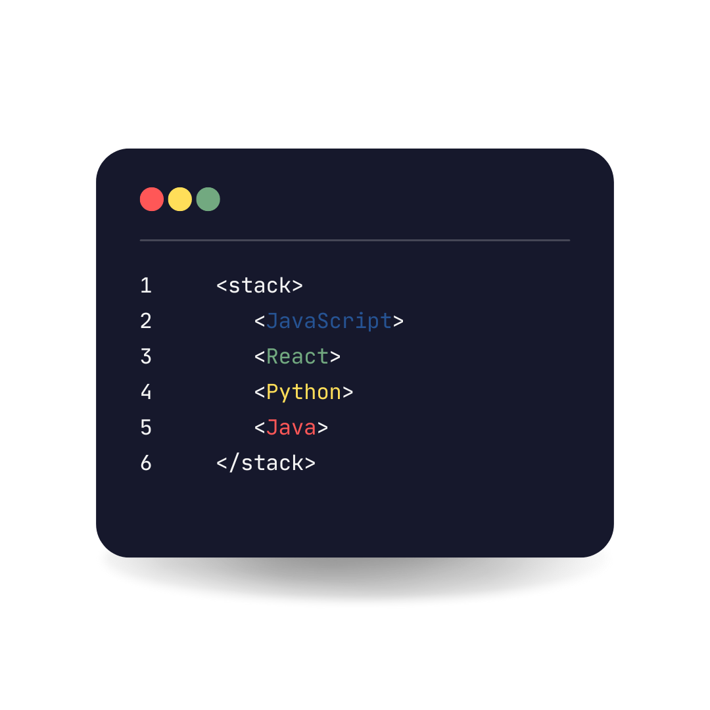

Sobre mim
Minha trajetória na tecnologia inicou há 4 anos. Desde então tenho explorado diversas áreas, como desenvolvimento web, análise de dados e inteligência artificial. Atualmente, estou focada em me aprofundar em programação front-end e back-end. Sou estudante de Sistemas de Informação e estou sempre em busca de novos conhecimentos e desafios. Além da graduação e do programa Trilhas, também estou completando um mestrado em Engenharia de Software.
Certificados
